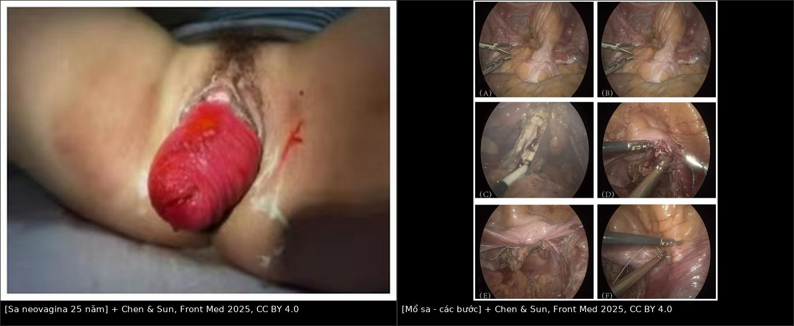
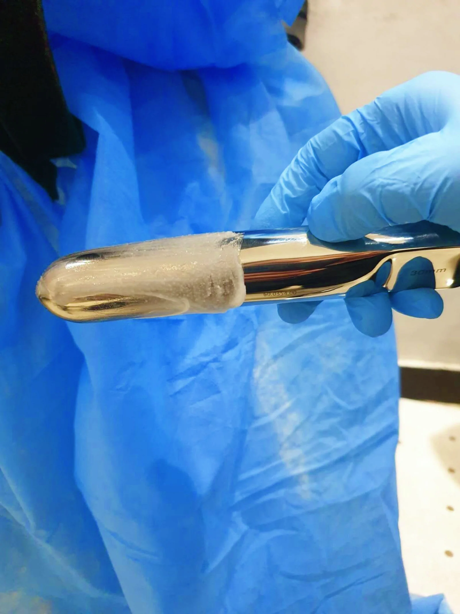
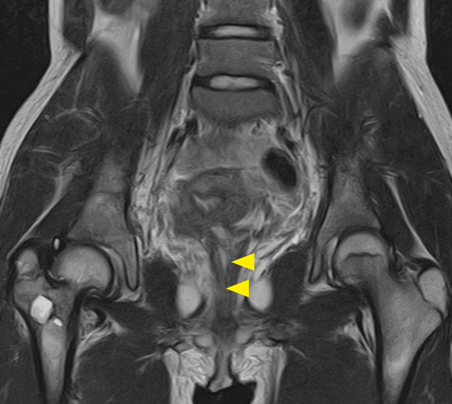
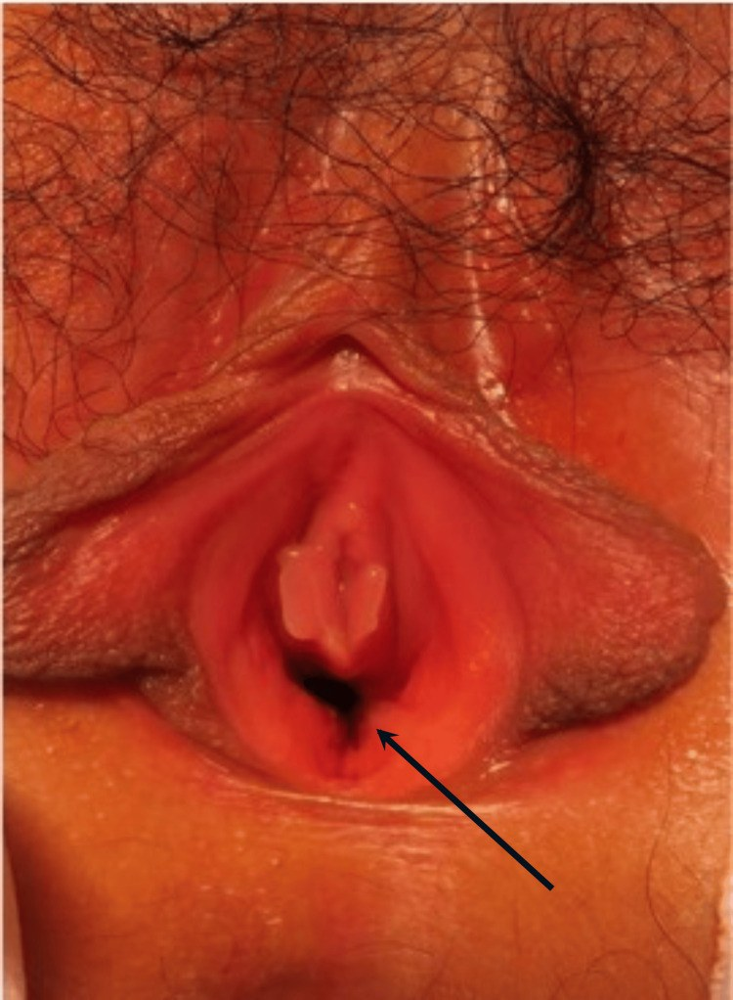
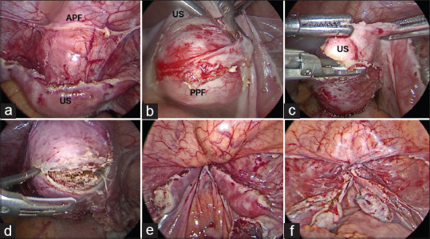
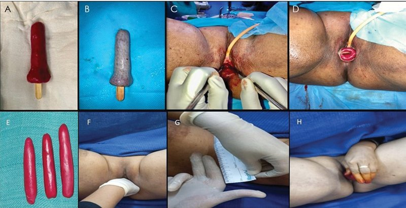

590 — Tạo hình âm đạo trong MRKH: chọn kỹ thuật & biến chứng muộn / Vaginoplasty in MRKH: technique choice & long-term complications
Tags: pattern:am-dao-bat-san pattern:tao-hinh-am-dao pattern:bien-chung-sau-mo vung:am-dao vung:tieu-khung protocol:MRI-tieu-khung protocol:nong-am-dao
Mức chắc chắn (certainty): tổng hợp y văn (literature synthesis) — tổng hợp từ các nghiên cứu mở CC BY/CC BY-NC (Saravanakumar Cureus 2024; Piróg Arch Gynecol Obstet 2025; Begum Indian J Plast Surg 2025; Chen & Sun Front Med 2025; Goto Cureus 2026; Khoiwal Gynecol Minim Invasive Ther 2026; Arajy PRS Glob Open 2026; so sánh phúc mạc–đại tràng sigma 2025) + đối chiếu bài 521 (chẩn đoán MRKH). Không có ca nguyên văn riêng của nhóm.
1. Tổng quan bệnh học – cơ chế hình ảnh
- Vấn đề cần giải quyết: MRKH (hội chứng Mayer–Rokitansky–Küster–Hauser) có bất sản tử cung + 2/3 trên âm đạo, buồng trứng và nội tiết bình thường; 1/4.000–5.000 trẻ gái. Mục tiêu điều trị không phải "làm tử cung" mà là tạo một ống âm đạo đủ dài – đủ rộng – không hẹp – giao hợp không đau, dài ≥ 7 cm (nhiều tác giả chấp nhận ≥ 6 cm), rộng 2 ngón tay (≈ 2,5–3 cm).
- Nguyên lý vật lý – vì sao hình ảnh sau mổ khác nhau theo kỹ thuật: tín hiệu MRI phụ thuộc lớp lót ống mới:
- Mảnh ghép da (McIndoe): biểu mô lát tầng sừng hóa + tuyến bã/nang lông → T1 có thể tăng nhẹ do bã, T2 trung gian, không có chất nhầy, đôi khi thấy lông mọc trong ống.
- Mảnh phúc mạc (Davydov): một lớp trung biểu mô mỏng, không tuyến → thành mỏng, T2 sáng nhẹ, khô, phụ thuộc nong để giữ độ rộng.
- Đoạn ruột (sigmoid/ileum): niêm mạc có tế bào đài tiết nhầy → dịch T2 rất sáng, có nếp niêm mạc, nhu động; dễ nhầm dịch nhầy với áp-xe nếu chỉ nhìn T2.
- Vạt da–niêm mạc (labia minora, Singapore, pudendal): có cảm giác, ẩm hơn mảnh ghép da, không co kéo kiểu mảnh ghép rời.
- Vì sao hẹp (stenosis) là biến chứng trung tâm: quá trình lành vết thương qua co rút của nguyên bào sợi – myofibroblast; mảnh ghép da sống nhờ thấm huyết tương 48–72 giờ, tái thông mạch 4–7 ngày; vùng thiếu mạch/thiếu nong sẽ xơ co → hẹp. Vì vậy khuôn (mold) + nong sau mổ là bắt buộc, không phải "hỗ trợ".
- Ngưỡng định lượng đáng nhớ:
- Nong không mổ: ≥ 30 phút/ngày, trong nhiều tháng, đích 7–8 cm; thành công tới ~90% khi có ê-kíp đa chuyên khoa (Saravanakumar 2024).
- McIndoe: bóc tách 10–12 cm, khuôn 3 tháng; series 7 ca McIndoe có 2/7 (28,6%) biến chứng (1 mất một phần mảnh ghép, 1 co kéo phải mổ lại) (Begum 2025).
- Davydov–Moore: thì mổ 82,1 phút, nằm viện 6 ngày, chiều dài 10 mm → 81 mm sau 6 tháng, FSFI 6,7 → 29,1, giao hợp lần đầu 17–22 tuần (Piróg 2025).
- So sánh phúc mạc vs sigmoid (n = 20 vs 30): biến chứng 15% vs 26,67%; thời gian đeo khuôn 3,0 ± 2,25 vs 4,7 ± 2,45 tháng; mùi dịch 25% vs 23,3% (khác biệt không có ý nghĩa) (2025).
- TẠI SAO MRI là chìa khóa sau mổ: siêu âm khó đo ống đã tạo vì không có mốc giải phẫu tự nhiên và đầu dò chèn làm biến dạng; MRI T2 3 mặt phẳng cho đo chiều dài – đường kính, phân biệt dịch nhầy (T2 sáng, không hạn chế khuếch tán) với áp-xe (T2 sáng + DWI hạn chế + thành ngấm thuốc dày), và thấy máu tụ (T1 sáng). Gel siêu âm trong ống giúp dựng thẳng trục đo.
2. Mẫu hình + chẩn đoán phân biệt theo vị trí (gamut)
- Mẫu hình cửa vào: nữ 46,XX, vô kinh nguyên phát, tuyến vú và lông mu bình thường, không có tử cung/cổ trên MRI → MRKH (đã chẩn đoán theo 521). Bài này bắt đầu sau khi đã loại trừ AIS/Turner và bệnh nhân đồng ý điều trị.
- Gamut theo kỹ thuật (chọn theo giải phẫu + nguyện vọng):
- Nong không mổ (Frank/Ingram): ưu tiên đầu tay khi có túi cùng âm đạo (vaginal dimple); không mổ, ít biến chứng, nhưng cần tuân thủ cao.
- Vecchietti: kéo giãn dần bằng hạt ô-liu + chỉ xuyên qua khoang bàng quang–trực tràng, cố định vào dụng cụ kéo trên xương mu; dùng khi còn túi cùng, muốn tránh mổ lớn.
- McIndoe: tạo khoang, lót mảnh ghép da mỏng (STSG) + khuôn; kinh điển, dễ thực hiện, nhưng co kéo/khô/lông.
- Davydov (phúc mạc): bóc phúc mạc tiểu khung làm thành ống, khâu vòm; ít mùi, không lông, thời gian đeo khuôn ngắn hơn.
- Sigmoid/ileum: dùng đoạn ruột làm ống; tự bôi trơn, đủ dài, nhưng mùi, chảy nhầy, biến chứng ruột, sa muộn.
- Vạt da–niêm mạc (labia minora/horseshoe, Singapore, pudendal): che phủ tại chỗ, có cảm giác, tránh mảnh ghép rời; kỹ thuật khó, sẹo mất thẩm mỹ.
- Gamut theo biến chứng – chia theo thời gian:
- Sớm (0–30 ngày): chảy máu/máu tụ, nhiễm trùng vùng mổ, mất mảnh ghép, tổn thương bàng quang/trực tràng/niệu quản, bí tiểu, huyết khối.
- Trung hạn (1–6 tháng): hẹp/co kéo, hẹp lỗ vào (introital stenosis), mô hạt, đau khi giao hợp, rò âm đạo–trực tràng/bàng quang.
- Muộn (> 6 tháng–nhiều năm): sa neovagina, hẹp tái phát, lông trong ống, dịch/mùi (ruột), HPV/condyloma và ung thư tế bào vảy tại neovagina (hiếm, chưa rõ tỷ lệ), rối loạn chức năng tình dục.
- Gợi nhớ "DAMS-VL" khi chọn kỹ thuật: Dimple còn không? Anatomy (bàng quang/trực tràng/niệu quản), Motivation–compliance, Scar (sẹo vùng chậu/âm hộ), Vaginal length mong muốn, Long-term follow-up (ai theo dõi được nhiều năm).
3. Bảng so sánh phân biệt (ma trận đối chiếu)
| Thực thể (entity) | Hình ảnh điển hình (US/MRI) | Chốt vào (rule-in) | Chốt loại (rule-out) | Gợi ý xác nhận |
|---|---|---|---|---|
| Nong không mổ (Frank/Ingram) | Không có ống thật; túi cùng sâu 2–7 cm trước mổ; sau nong ống dài, thành mỏng đều | Túi cùng còn + ống dài ≥ 6–7 cm sau nong + không có mảnh ghép/khuôn | Không có túi cùng, đã mổ tạo ống có mảnh ghép → không phải nong đơn thuần | Đo chiều dài bằng thước/que; MRI chỉ khi nghi hẹp |
| Vecchietti | Ống dài, trục thẳng; không thấy mảnh ghép; có thể thấy đường hầm chỉ cũ | Tiền sử đặt hạt ô-liu + kéo trên xương mu; ống không có niêm mạc ruột | Thấy nếp niêm mạc/tuyến nhầy → không phải Vecchietti | Hỏi kỹ thuật; MRI T2 |
| McIndoe | Ống lót da, T1 hơi sáng do bã, T2 trung gian, không chất nhầy; có thể thấy lông; khuôn tạo khoảng trống | Lớp lót kiểu da + không nếp niêm mạc + tiền sử mảnh ghép da | Nếp niêm mạc + dịch nhầy → ruột; thành mỏng không tuyến → phúc mạc | Khám + MRI T2; sinh thiết chỉ khi nghi loạn sản |
| Davydov (phúc mạc) | Thành ống mỏng, đều, T2 sáng nhẹ, không tuyến, vòm khâu vào phúc mạc | Không chất nhầy + không lông + thành rất mỏng + tiền sử nội soi | Có nếp niêm mạc/tiết nhầy → ruột; lớp da → McIndoe | MRI T2 + hỏi kỹ thuật |
| Sigmoid/ileum | Nếp niêm mạc + dịch T2 rất sáng, có nhu động; đôi khi túi cùng/ống dài | Dịch nhầy T2 sáng, không hạn chế khuếch tán + tiền sử dùng ruột | DWI hạn chế + thành dày ngấm thuốc → áp-xe, không phải dịch nhầy | MRI DWI/ADC; nội soi khi nghi loạn sản |
| Vạt labia minora/horseshoe | Ống có da–niêm mạc tại chỗ, không mảnh ghép rời; lỗ vào rộng, không co kéo | Vạt tại chỗ + cảm giác tốt + không lông trong ống | Mảnh ghép da rời có đường khâu chu vi → McIndoe | Khám; MRI nếu đau/hẹp |
| Sa neovagina | Khối niêm mạc/da lộ ra ngoài màng trinh, có thể lộ toàn bộ thành ống; MRI thấy ống lộn | Khối sa qua lỗ âm đạo + thấy vòm ống lộn | Sa tử cung (không có tử cung trong MRKH) → loại | Khám đứng/Val-salva; MRI khi cần |
| Áp-xe quanh neovagina | Ổ dịch T2 sáng + DWI hạn chế + thành dày ngấm thuốc, khí trong ổ | DWI hạn chế + khí + sốt/đau | Dịch nhầy ruột không hạn chế khuếch tán | DWI/ADC + cấy/dẫn lưu |

Trái: khối sa toàn bộ thành neovagina (đại tràng sigma) lộ ra ngoài, 25 năm sau mổ. Phải: các bước phẫu thuật sa qua đường âm đạo. Nguồn: Chen L, Sun L., Front Med 2025, PMC12702906 Fig. 1 & 2, CC BY 4.0. Ảnh ghép letterbox, giữ nguyên tỷ lệ.Hai kiểu "hẹp" cần phân biệt
- Hẹp lỗ vào (introital stenosis): vòng xơ ngay sau màng trinh, thường do co kéo mảnh ghép da hoặc khâu căng; nong có thể hiệu quả, đôi khi cần Z-plasty/giải phóng vòng xơ.
- Hẹp ống (canal stenosis): ống ngắn hoặc dính từng đoạn, thường do không đeo khuôn/nong đủ; MRI có gel giúp xác định đoạn hẹp và chiều dài còn lại. Đừng nhầm ống xẹp khi không có gel với hẹp thật.
4. Protocol chụp + theo dõi & xử trí
- Trước mổ:
- MRI tiểu khung T2 3 mặt phẳng (lát 3–4 mm) — đo túi cùng âm đạo, xác nhận không tử cung/cổ, tìm mầm tử cung ứ máu, đánh giá bàng quang–trực tràng–niệu quản; luôn đọc thận (30–40% MRKH có bất thường thận).
- Siêu âm bổ sung khi cần; không cần cản quang thường quy.
- Loại trừ nhiễm trùng âm hộ/âm đạo trước mổ; tư vấn không có tử cung → không mang thai tự nhiên, bảo tồn buồng trứng.
- Sau mổ — lịch theo dõi tối thiểu: khám 1 tuần, 1 tháng, 3 tháng, 6 tháng, 12 tháng, sau đó hằng năm. Mỗi lần: đo chiều dài – đường kính, soi lỗ vào, đánh giá mô hạt/hẹp/lông, hỏi đau khi giao hợp, FSFI khi đã hoạt động tình dục.
- Nong sau mổ: McIndoe đeo khuôn 3 tháng (series trên); phúc mạc 3,0 tháng, sigmoid 4,7 tháng; sau đó nong duy trì theo hướng dẫn, đặc biệt 3–6 tháng đầu — đây là yếu tố quyết định chống hẹp.
- Thời điểm giao hợp: thường 4–6 tuần sau khi vết mổ ổn định; trong nghiên cứu Davydov–Moore là 17–22 tuần — cá thể hóa theo lành thương và tâm lý.
- Ngưỡng can thiệp lại: chiều dài < 6 cm hoặc không đút được 2 ngón/không giao hợp được = thất bại chức năng, cần nong chuỗi tích cực ± mổ giải phóng/tạo hình lại; hẹp tái phát nhiều lần → cân nhắc vạt tại chỗ thay mảnh ghép.
- Sa neovagina: khám ở tư thế đứng/Val-salva; MRI khi cần đánh giá độ lộn; xử trí cắt bớt – khâu treo vòm (vaginal repair) hoặc treo vòm vào xương cùng/mỏm nhô (sacrocolpopexy) ở ca tái phát; báo trước nguy cơ tái phát.
- Đo "thành công" tại giường: dùng que Hegar/thước đo chiều sâu × chiều rộng (ví dụ đạt 8 × 3,2 cm trong một ca McIndoe cải tiến), ghi cùng tư thế và cùng người đo để so sánh giữa các lần.

Đo chiều sâu và đường kính neovagina bằng que Hegar sau tạo hình; đây là cách ghi nhận "đủ dài – đủ rộng" tại giường. Nguồn: Arajy ZY et al., PRS Global Open 2026, PMC13596978 Fig. 5, CC BY-NC-ND 4.0 (nguyên bản).- Tầm soát muộn: không có đồng thuận quốc tế về cytology/HPV tại neovagina (2026). Vì đã có ca condyloma/HPV và SCC tại neovagina, nhóm biên soạn khuyến nghị khám hằng năm + lấy tế bào học/HPV từ vòm ống ở người có hoạt động tình dục, và sinh thiết mọi tổn thương loét/nốt kéo dài — ghi rõ đây là suy luận thực hành, chưa phải guideline.
flowchart TD
A[Bệnh nhân sau tạo hình âm đạo] --> B{Triệu chứng chính}
B -->|Đau, sốt, chảy dịch| C[Siêu âm + MRI có cản quang, DWI]
C --> D{Có ổ dịch hạn chế khuếch tán/khí?}
D -->|Có| E[Áp-xe: dẫn lưu + kháng sinh]
D -->|Không| F[Viêm mô tế bào/mô hạt: điều trị bảo tồn]
B -->|Khối lộ ra ngoài| G[Khám đứng/Val-salva + MRI]
G --> H[Sa neovagina: khâu treo vòm ± sacrocolpopexy]
B -->|Hẹp, giao hợp đau| I[Đo chiều dài/đường kính có gel]
I --> J{Chiều dài dưới 6 cm hoặc không đút 2 ngón?}
J -->|Có| K[Nong chuỗi ± mổ giải phóng/tạo hình lại]
J -->|Không| L[Tư vấn + vật lý trị liệu sàn chậu]
B -->|Chảy máu| M[MRI T1/T2 tìm máu tụ; cầm máu/dẫn lưu]
5. Biến thể bình thường & cạm bẫy
- Dịch nhầy T2 rất sáng trong neovagina ruột là bình thường, không phải áp-xe: DWI không hạn chế, thành mỏng đều, không khí, không sốt. Chỉ chọc/dẫn lưu khi có đau khu trú + sốt + DWI hạn chế.
- Máu tụ sớm T1 sáng có thể bị đọc là "mỡ" hoặc "mảnh ghép"; đối chiếu thời gian mổ, T2, DWI và theo dõi.
- Mô hạt ngấm thuốc ở vòm ống 3–6 tháng đầu là lành thương, không phải u/tái phát — đừng sinh thiết mù; sinh thiết khi tổn thương loét cứng, phát triển, chảy máu kéo dài.
- Đo chiều dài khi đang đeo khuôn hoặc bệnh nhân gồng → sai số lớn; đo khi nghỉ, có gel, cùng tư thế mỗi lần.
- Không thấy ống trên MRI vì ống xẹp — bơm gel 20–40 mL (nếu dung nạp) trước khi kết luận hẹp/tắc.
- Sa neovagina có thể xuất hiện sau nhiều thập kỷ (ca 25 năm) — không loại trừ vì "đã mổ lâu, ổn định".
- Bỏ sót tổn thương niệu quản/bàng quang khi mổ: đau hông lưng, rò nước tiểu, creatinin tăng → CT cystography/US thận ngay, đừng chỉ nghĩ "đau vết mổ".
- Tư vấn sai về sinh sản: buồng trứng còn → trứng khỏe; không có tử cung → không mang thai tự nhiên; nhắc mang thai hộ/ghép tử cung là lựa chọn tham khảo, không phải chỉ định thường quy.
6. Tự lượng giá — Blind Quiz
Ca 1 — Nữ 47 tuổi, MRKH, tạo hình âm đạo bằng đại tràng sigma cách đây 25 năm, nay thấy khối đỏ lộ ra ngoài khi đứng lâu. Đọc ảnh lâm sàng + các bước mổ.
- Hỏi: khối sa là gì? Cơ chế? Cần phân biệt với khối gì? Hướng xử trí?
Bấm để hiện đáp án (findings + chẩn đoán)
- Dấu hiệu: khối niêm mạc đỏ, có nếp, lộ hoàn toàn ra ngoài qua lỗ âm đạo; ảnh mổ cho thấy toàn bộ thành ống lộn ra ngoài, được cắt bớt và khâu treo lại.
- Chẩn đoán: sa toàn bộ neovagina (full-thickness neovaginal prolapse) sau tạo hình bằng đại tràng sigma — biến chứng muộn hiếm nhưng có thể tới 25 năm. Cơ chế: thiếu treo vòm + tăng áp lực ổ bụng mạn + thành ruột nặng, mất trương lực.
- Phân biệt: sa tử cung (không có tử cung trong MRKH), polyp/khối u neovagina, lộn niêm mạc đơn thuần; khám đứng/Val-salva + MRI giúp xác định.
- Xử trí: phẫu thuật qua đường âm đạo (cắt bớt – khâu treo), cân nhắc treo vòm vào xương cùng nếu tái phát; tư vấn nguy cơ tái phát và theo dõi dài hạn.
- Nguồn: Chen L, Sun L., Front Med 2025, PMC12702906 Fig. 1 & 2, CC BY 4.0.
Ca 2 — Nữ 19 tuổi, MRKH, tạo hình âm đạo 3 tháng trước. MRI kiểm tra: ống có thông không? Có ổ dịch không?

- Hỏi: mũi tên vàng chỉ gì? Có bằng chứng hẹp/tắc hay áp-xe? Cần đo gì trên MRI?
Bấm để hiện đáp án (findings + chẩn đoán)
- Dấu hiệu: ống neovagina thông suốt, thành mỏng đều (mũi tên vàng), không có ổ dịch/khí quanh ống; không thấy tụ dịch vòm.
- Chẩn đoán: neovagina lành thương tốt, không hẹp/tắc, không áp-xe sau 3 tháng.
- Cần đo: chiều dài từ lỗ vào đến vòm, đường kính, độ dày thành; đối chiếu với ngưỡng ≥ 6–7 cm và 2 ngón. Nếu ống xẹp, bơm gel rồi chụp lại.
- Nguồn: Goto S et al., Cureus 2026, PMC12966936 Fig. 5, CC BY 4.0.
Ca 3 — Cùng bệnh nhân Ca 2, ảnh lâm sàng 2 năm sau mổ. Đây là kỹ thuật gì và vì sao ống giữ được độ rộng?

- Hỏi: nhận diện kỹ thuật? Lớp lót là gì? Ưu/nhược điểm so với mảnh ghép da?
Bấm để hiện đáp án (findings + chẩn đoán)
- Dấu hiệu: lỗ vào rộng, ống niêm mạc hồng, ẩm, không co kéo; đây là neovagina tạo bằng đoạn ruột non theo nguyên lý Yang–Monti (ống ruột non được tạo hình để đủ dài).
- Lớp lót: niêm mạc ruột non → tiết nhầy, tự bôi trơn; ưu điểm: ẩm, đủ dài, ít co kéo; nhược điểm: chảy nhầy/mùi, cần mổ bụng, nguy cơ biến chứng ruột.
- So với McIndoe: McIndoe khô, có thể mọc lông, co kéo mảnh ghép, nhưng ít xâm lấn hơn.
- Nguồn: Goto S et al., Cureus 2026, PMC12966936 Fig. 7, CC BY 4.0.
Ca 4 — Nội soi Davydov: nhận diện các mốc và giải thích vì sao dùng phúc mạc.

- Hỏi: APF, PPF, US là gì? Vì sao phúc mạc là lớp lót tốt? Biến chứng cần cảnh giác?
Bấm để hiện đáp án (findings + chẩn đoán)
- APF = vạt phúc mạc trước (anterior peritoneal flap); PPF = vạt phúc mạc sau (posterior peritoneal flap); US = mỏm tử cung thô sơ/uterosacral vùng sau.
- Phúc mạc mỏng, trơn, không tuyến bã/lông, ít co kéo hơn mảnh ghép da; khâu vòm vào phúc mạc tạo vòm mềm, ẩm tự nhiên.
- Biến chứng: chảy máu, tổn thương bàng quang/trực tràng/niệu quản, hẹp vòm, sa; theo dõi sát 3–6 tháng đầu.
- Nguồn: Khoiwal K et al., Gynecol Minim Invasive Ther 2026, PMC12965514 Fig. 2, CC BY-NC-ND 4.0 (giữ nguyên bản, không ghép/crop).
Ca 5 — Kỹ thuật McIndoe: ảnh trong mổ + kết quả độ sâu/rộng. Đọc và trả lời trước khi mở.

- Hỏi: mảnh ghép lấy từ đâu? Tại sao phải đeo khuôn? Biến chứng sớm/muộn hay gặp?
Bấm để hiện đáp án (findings + chẩn đoán)
- Ảnh cho thấy khuôn (mold) + mảnh ghép da mỏng (split-thickness skin graft) được cuộn quanh khuôn, đưa vào khoang đã bóc tách giữa bàng quang và trực tràng.
- Mảnh ghép lấy từ mông, đùi hoặc vùng trên xương mu; khuôn giữ ống mở trong 3 tháng để mảnh ghép sống nhờ thấm huyết tương rồi tái thông mạch, chống co kéo.
- Biến chứng: mất một phần/mất toàn bộ mảnh ghép, co kéo hẹp, khô, mọc lông, đau khi giao hợp; series 7 ca McIndoe có 2/7 (28,6%) biến chứng.
- Nguồn: Begum R et al., Indian J Plast Surg 2025, PMC12755944 Fig. 3, CC BY 4.0.
Bài liên quan chéo
- 521 – MRKH: bất sản tử cung–âm đạo & chẩn đoán
- 529 – Cổ tử cung & âm đạo bẩm sinh: dị dạng tắc nghẽn
- 528 – Dị dạng tử cung bẩm sinh ESHRE/ESGE & ASRM
- 547 – Sa tạng chậu nữ: POP-Q & lưới nâng (nguyên lý treo vòm/sa)
- 557 – Biến chứng lưới nâng sa (xử trí biến chứng vật liệu cấy)
- 500 – Tổng quan Vú & Sản Phụ khoa
Ảnh
- Tên file:
590_tao-hinh-am-dao_Modality_SourceID.jpg; nguồn + giấy phép từng ảnh trongimages/CREDITS.md. - Ảnh CC BY-NC-ND (Davydov, McIndoe modification) giữ nguyên bản, không crop/ghép.
- Ảnh ghép chỉ dùng ảnh CC BY (Chen & Sun 2025), letterbox giữ tỷ lệ.
Không dùng để chẩn đoán độc lập khi chưa có người hướng dẫn.